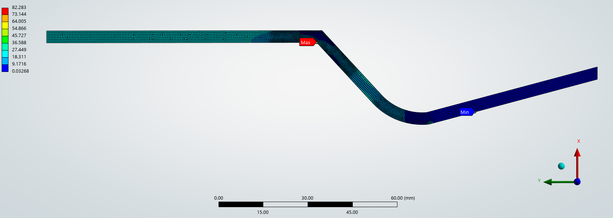

Stress analysis you can verify
PRC-licensed Professional Aeronautical Engineer in Tsukuba, Japan, looking for structures and stress roles. I run the analysis, the CFD behind it and the drawings after it.
PRC Professional Aeronautical Engineer, 2024
Drawings to ASME Y14.5-2018
FAR Part 23, 27 and 29

7.12factor of safety, v2.0, current
Read on a through-wall path at the chamber-to-converging junction, where the stress governs. v1.0 read 42.70 at the throat and was withdrawn.
Four analyses
Each with its result, the number to remember and how it was checked.
Built by hand
Three projects where the drawing became a thing on a bench.
What I bring to a project
The tools, grouped by the stage of the work each one serves, from geometry through analysis to reporting.
Feel free to reach out!
Open to aerospace and mechanical roles, structures and stress first.
+81-70-3276-7554Tsukuba, Ibaraki, Japan
+63-933-665-1535Angeles, Pampanga, Philippines